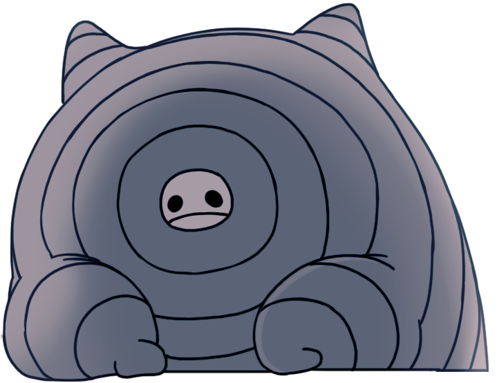

A zona mais isolada do reino, mas uma muito importante. Ao longo de uma grande subida, se vê uma carcaça de de uma minhoca grande. O que saiu dela? Porque todos falam de um 'sinal' que vem dessas minhocas, que atrai tantos insetos? Entramos nessa zona em busca de respostas sobre nossa origem, e ela encontraremos. Podemos dizer que aqui, tem mais do que parece.
A zona mais isolada do reino, mas uma muito importante. Ao longo de uma grande subida, se vê uma carcaça de de uma minhoca grande. O que saiu dela? Porque todos falam de um 'sinal' que vem dessas minhocas, que atrai tantos insetos? Entramos nessa zona em busca de respostas sobre nossa origem, e ela encontraremos. Podemos dizer que aqui, tem mais do que parece.
"Esse lugar de cinzas é tumulo do Wyrm. Dizem que veio aqui para morrer.Mas o que é morte para aquele ser antigo?
Eu acho que é mais como uma transformação"
- Bardoon
"Você suplantaria nosso irmão amaldiçoado pelo nascimento, ou você o transcenderia?" - Hornet
"Você suplantaria nosso irmão amaldiçoado pelo nascimento, ou você o transcenderia?" - Hornet